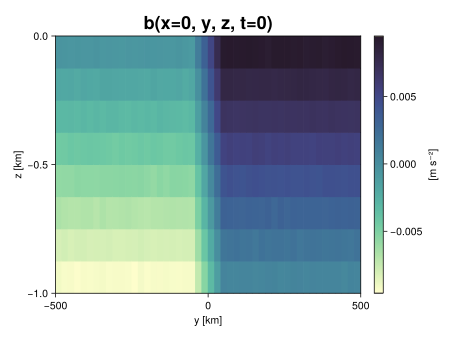
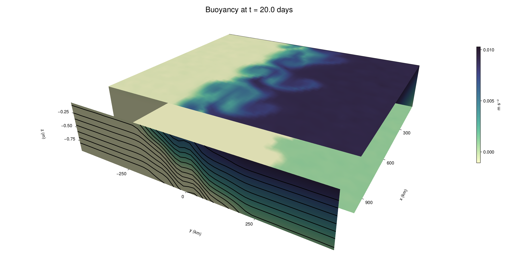

Baroclinic adjustment
In this example, we simulate the evolution and equilibration of a baroclinically unstable front.
Install dependencies
First let's make sure we have all required packages installed.
using Pkg
pkg"add Oceananigans, CairoMakie"using Oceananigans
using Oceananigans.UnitsGrid
We use a three-dimensional channel that is periodic in the x direction:
Lx = 1000kilometers # east-west extent [m]
Ly = 1000kilometers # north-south extent [m]
Lz = 1kilometers # depth [m]
grid = RectilinearGrid(size = (48, 48, 8),
x = (0, Lx),
y = (-Ly/2, Ly/2),
z = (-Lz, 0),
topology = (Periodic, Bounded, Bounded))48×48×8 RectilinearGrid{Float64, Periodic, Bounded, Bounded} on CPU with 3×3×3 halo
├── Periodic x ∈ [0.0, 1.0e6) regularly spaced with Δx=20833.3
├── Bounded y ∈ [-500000.0, 500000.0] regularly spaced with Δy=20833.3
└── Bounded z ∈ [-1000.0, 0.0] regularly spaced with Δz=125.0Model
We built a HydrostaticFreeSurfaceModel with an ImplicitFreeSurface solver. Regarding Coriolis, we use a beta-plane centered at 45° South.
model = HydrostaticFreeSurfaceModel(; grid,
coriolis = BetaPlane(latitude = -45),
buoyancy = BuoyancyTracer(),
tracers = :b,
momentum_advection = WENO(),
tracer_advection = WENO())HydrostaticFreeSurfaceModel{CPU, RectilinearGrid}(time = 0 seconds, iteration = 0)
├── grid: 48×48×8 RectilinearGrid{Float64, Periodic, Bounded, Bounded} on CPU with 3×3×3 halo
├── timestepper: QuasiAdamsBashforth2TimeStepper
├── tracers: b
├── closure: Nothing
├── buoyancy: BuoyancyTracer with ĝ = NegativeZDirection()
├── free surface: ImplicitFreeSurface with gravitational acceleration 9.80665 m s⁻²
│ └── solver: FFTImplicitFreeSurfaceSolver
└── coriolis: BetaPlane{Float64}We start our simulation from rest with a baroclinically unstable buoyancy distribution. We use ramp(y, Δy), defined below, to specify a front with width Δy and horizontal buoyancy gradient M². We impose the front on top of a vertical buoyancy gradient N² and a bit of noise.
"""
ramp(y, Δy)
Linear ramp from 0 to 1 between -Δy/2 and +Δy/2.
For example:
```
y < -Δy/2 => ramp = 0
-Δy/2 < y < -Δy/2 => ramp = y / Δy
y > Δy/2 => ramp = 1
```
"""
ramp(y, Δy) = min(max(0, y/Δy + 1/2), 1)
N² = 1e-5 # [s⁻²] buoyancy frequency / stratification
M² = 1e-7 # [s⁻²] horizontal buoyancy gradient
Δy = 100kilometers # width of the region of the front
Δb = Δy * M² # buoyancy jump associated with the front
ϵb = 1e-2 * Δb # noise amplitude
bᵢ(x, y, z) = N² * z + Δb * ramp(y, Δy) + ϵb * randn()
set!(model, b=bᵢ)Let's visualize the initial buoyancy distribution.
using CairoMakie
# Build coordinates with units of kilometers
x, y, z = 1e-3 .* nodes(grid, (Center(), Center(), Center()))
b = model.tracers.b
fig, ax, hm = heatmap(y, z, interior(b)[1, :, :],
colormap=:deep,
axis = (xlabel = "y [km]",
ylabel = "z [km]",
title = "b(x=0, y, z, t=0)",
titlesize = 24))
Colorbar(fig[1, 2], hm, label = "[m s⁻²]")
fig
Simulation
Now let's build a Simulation.
simulation = Simulation(model, Δt=20minutes, stop_time=20days)Simulation of HydrostaticFreeSurfaceModel{CPU, RectilinearGrid}(time = 0 seconds, iteration = 0)
├── Next time step: 20 minutes
├── Elapsed wall time: 0 seconds
├── Wall time per iteration: NaN days
├── Stop time: 20 days
├── Stop iteration : Inf
├── Wall time limit: Inf
├── Callbacks: OrderedDict with 4 entries:
│ ├── stop_time_exceeded => Callback of stop_time_exceeded on IterationInterval(1)
│ ├── stop_iteration_exceeded => Callback of stop_iteration_exceeded on IterationInterval(1)
│ ├── wall_time_limit_exceeded => Callback of wall_time_limit_exceeded on IterationInterval(1)
│ └── nan_checker => Callback of NaNChecker for u on IterationInterval(100)
├── Output writers: OrderedDict with no entries
└── Diagnostics: OrderedDict with no entriesWe add a TimeStepWizard callback to adapt the simulation's time-step,
conjure_time_step_wizard!(simulation, IterationInterval(20), cfl=0.2, max_Δt=20minutes)Also, we add a callback to print a message about how the simulation is going,
using Printf
wall_clock = Ref(time_ns())
function print_progress(sim)
u, v, w = model.velocities
progress = 100 * (time(sim) / sim.stop_time)
elapsed = (time_ns() - wall_clock[]) / 1e9
@printf("[%05.2f%%] i: %d, t: %s, wall time: %s, max(u): (%6.3e, %6.3e, %6.3e) m/s, next Δt: %s\n",
progress, iteration(sim), prettytime(sim), prettytime(elapsed),
maximum(abs, u), maximum(abs, v), maximum(abs, w), prettytime(sim.Δt))
wall_clock[] = time_ns()
return nothing
end
add_callback!(simulation, print_progress, IterationInterval(100))Diagnostics/Output
Here, we save the buoyancy, $b$, at the edges of our domain as well as the zonal ($x$) average of buoyancy.
u, v, w = model.velocities
ζ = ∂x(v) - ∂y(u)
B = Average(b, dims=1)
U = Average(u, dims=1)
V = Average(v, dims=1)
filename = "baroclinic_adjustment"
save_fields_interval = 0.5day
slicers = (east = (grid.Nx, :, :),
north = (:, grid.Ny, :),
bottom = (:, :, 1),
top = (:, :, grid.Nz))
for side in keys(slicers)
indices = slicers[side]
simulation.output_writers[side] = JLD2OutputWriter(model, (; b, ζ);
filename = filename * "_$(side)_slice",
schedule = TimeInterval(save_fields_interval),
overwrite_existing = true,
indices)
end
simulation.output_writers[:zonal] = JLD2OutputWriter(model, (; b=B, u=U, v=V);
filename = filename * "_zonal_average",
schedule = TimeInterval(save_fields_interval),
overwrite_existing = true)JLD2OutputWriter scheduled on TimeInterval(12 hours):
├── filepath: ./baroclinic_adjustment_zonal_average.jld2
├── 3 outputs: (b, u, v)
├── array type: Array{Float64}
├── including: [:grid, :coriolis, :buoyancy, :closure]
└── max filesize: Inf YiBNow we're ready to run.
@info "Running the simulation..."
run!(simulation)
@info "Simulation completed in " * prettytime(simulation.run_wall_time)[ Info: Running the simulation...
[ Info: Initializing simulation...
[00.00%] i: 0, t: 0 seconds, wall time: 42.104 seconds, max(u): (0.000e+00, 0.000e+00, 0.000e+00) m/s, next Δt: 20 minutes
[ Info: ... simulation initialization complete (29.593 seconds)
[ Info: Executing initial time step...
[ Info: ... initial time step complete (22.518 seconds).
[06.94%] i: 100, t: 1.389 days, wall time: 53.602 seconds, max(u): (1.252e-01, 1.179e-01, 1.414e-03) m/s, next Δt: 20 minutes
[13.89%] i: 200, t: 2.778 days, wall time: 4.723 seconds, max(u): (2.150e-01, 1.732e-01, 1.785e-03) m/s, next Δt: 20 minutes
[20.83%] i: 300, t: 4.167 days, wall time: 4.089 seconds, max(u): (2.715e-01, 2.486e-01, 1.824e-03) m/s, next Δt: 20 minutes
[27.78%] i: 400, t: 5.556 days, wall time: 3.902 seconds, max(u): (3.566e-01, 3.508e-01, 1.950e-03) m/s, next Δt: 20 minutes
[34.72%] i: 500, t: 6.944 days, wall time: 3.852 seconds, max(u): (4.604e-01, 5.044e-01, 2.253e-03) m/s, next Δt: 20 minutes
[41.67%] i: 600, t: 8.333 days, wall time: 3.953 seconds, max(u): (6.065e-01, 8.810e-01, 2.932e-03) m/s, next Δt: 20 minutes
[48.61%] i: 700, t: 9.722 days, wall time: 4.047 seconds, max(u): (1.024e+00, 1.220e+00, 3.888e-03) m/s, next Δt: 20 minutes
[55.56%] i: 800, t: 11.111 days, wall time: 4.198 seconds, max(u): (1.366e+00, 1.159e+00, 4.865e-03) m/s, next Δt: 20 minutes
[62.50%] i: 900, t: 12.500 days, wall time: 4.240 seconds, max(u): (1.376e+00, 1.240e+00, 4.038e-03) m/s, next Δt: 20 minutes
[69.44%] i: 1000, t: 13.889 days, wall time: 4.193 seconds, max(u): (1.394e+00, 1.089e+00, 4.214e-03) m/s, next Δt: 20 minutes
[76.39%] i: 1100, t: 15.278 days, wall time: 4.063 seconds, max(u): (1.172e+00, 1.079e+00, 2.892e-03) m/s, next Δt: 20 minutes
[83.33%] i: 1200, t: 16.667 days, wall time: 3.936 seconds, max(u): (1.455e+00, 1.135e+00, 3.572e-03) m/s, next Δt: 20 minutes
[90.28%] i: 1300, t: 18.056 days, wall time: 3.948 seconds, max(u): (1.529e+00, 1.092e+00, 2.993e-03) m/s, next Δt: 20 minutes
[97.22%] i: 1400, t: 19.444 days, wall time: 3.982 seconds, max(u): (1.421e+00, 1.092e+00, 2.859e-03) m/s, next Δt: 20 minutes
[ Info: Simulation is stopping after running for 1.932 minutes.
[ Info: Simulation time 20 days equals or exceeds stop time 20 days.
[ Info: Simulation completed in 1.933 minutes
Visualization
All that's left is to make a pretty movie. Actually, we make two visualizations here. First, we illustrate how to make a 3D visualization with Makie's Axis3 and Makie.surface. Then we make a movie in 2D. We use CairoMakie in this example, but note that using GLMakie is more convenient on a system with OpenGL, as figures will be displayed on the screen.
using CairoMakieThree-dimensional visualization
We load the saved buoyancy output on the top, bottom, north, and east surface as FieldTimeSerieses.
filename = "baroclinic_adjustment"
sides = keys(slicers)
slice_filenames = NamedTuple(side => filename * "_$(side)_slice.jld2" for side in sides)
b_timeserieses = (east = FieldTimeSeries(slice_filenames.east, "b"),
north = FieldTimeSeries(slice_filenames.north, "b"),
bottom = FieldTimeSeries(slice_filenames.bottom, "b"),
top = FieldTimeSeries(slice_filenames.top, "b"))
B_timeseries = FieldTimeSeries(filename * "_zonal_average.jld2", "b")
times = B_timeseries.times
grid = B_timeseries.grid48×48×8 RectilinearGrid{Float64, Periodic, Bounded, Bounded} on CPU with 3×3×3 halo
├── Periodic x ∈ [0.0, 1.0e6) regularly spaced with Δx=20833.3
├── Bounded y ∈ [-500000.0, 500000.0] regularly spaced with Δy=20833.3
└── Bounded z ∈ [-1000.0, 0.0] regularly spaced with Δz=125.0We build the coordinates. We rescale horizontal coordinates to kilometers.
xb, yb, zb = nodes(b_timeserieses.east)
xb = xb ./ 1e3 # convert m -> km
yb = yb ./ 1e3 # convert m -> km
Nx, Ny, Nz = size(grid)
x_xz = repeat(x, 1, Nz)
y_xz_north = y[end] * ones(Nx, Nz)
z_xz = repeat(reshape(z, 1, Nz), Nx, 1)
x_yz_east = x[end] * ones(Ny, Nz)
y_yz = repeat(y, 1, Nz)
z_yz = repeat(reshape(z, 1, Nz), grid.Ny, 1)
x_xy = x
y_xy = y
z_xy_top = z[end] * ones(grid.Nx, grid.Ny)
z_xy_bottom = z[1] * ones(grid.Nx, grid.Ny)Then we create a 3D axis. We use zonal_slice_displacement to control where the plot of the instantaneous zonal average flow is located.
fig = Figure(size = (1600, 800))
zonal_slice_displacement = 1.2
ax = Axis3(fig[2, 1],
aspect=(1, 1, 1/5),
xlabel = "x (km)",
ylabel = "y (km)",
zlabel = "z (m)",
xlabeloffset = 100,
ylabeloffset = 100,
zlabeloffset = 100,
limits = ((x[1], zonal_slice_displacement * x[end]), (y[1], y[end]), (z[1], z[end])),
elevation = 0.45,
azimuth = 6.8,
xspinesvisible = false,
zgridvisible = false,
protrusions = 40,
perspectiveness = 0.7)Axis3()We use data from the final savepoint for the 3D plot. Note that this plot can easily be animated by using Makie's Observable. To dive into Observables, check out Makie.jl's Documentation.
n = length(times)41Now let's make a 3D plot of the buoyancy and in front of it we'll use the zonally-averaged output to plot the instantaneous zonal-average of the buoyancy.
b_slices = (east = interior(b_timeserieses.east[n], 1, :, :),
north = interior(b_timeserieses.north[n], :, 1, :),
bottom = interior(b_timeserieses.bottom[n], :, :, 1),
top = interior(b_timeserieses.top[n], :, :, 1))
# Zonally-averaged buoyancy
B = interior(B_timeseries[n], 1, :, :)
clims = 1.1 .* extrema(b_timeserieses.top[n][:])
kwargs = (colorrange=clims, colormap=:deep)
surface!(ax, x_yz_east, y_yz, z_yz; color = b_slices.east, kwargs...)
surface!(ax, x_xz, y_xz_north, z_xz; color = b_slices.north, kwargs...)
surface!(ax, x_xy, y_xy, z_xy_bottom ; color = b_slices.bottom, kwargs...)
surface!(ax, x_xy, y_xy, z_xy_top; color = b_slices.top, kwargs...)
sf = surface!(ax, zonal_slice_displacement .* x_yz_east, y_yz, z_yz; color = B, kwargs...)
contour!(ax, y, z, B; transformation = (:yz, zonal_slice_displacement * x[end]),
levels = 15, linewidth = 2, color = :black)
Colorbar(fig[2, 2], sf, label = "m s⁻²", height = Relative(0.4), tellheight=false)
title = "Buoyancy at t = " * string(round(times[n] / day, digits=1)) * " days"
fig[1, 1:2] = Label(fig, title; fontsize = 24, tellwidth = false, padding = (0, 0, -120, 0))
rowgap!(fig.layout, 1, Relative(-0.2))
colgap!(fig.layout, 1, Relative(-0.1))
save("baroclinic_adjustment_3d.png", fig)
Two-dimensional movie
We make a 2D movie that shows buoyancy $b$ and vertical vorticity $ζ$ at the surface, as well as the zonally-averaged zonal and meridional velocities $U$ and $V$ in the $(y, z)$ plane. First we load the FieldTimeSeries and extract the additional coordinates we'll need for plotting
ζ_timeseries = FieldTimeSeries(slice_filenames.top, "ζ")
U_timeseries = FieldTimeSeries(filename * "_zonal_average.jld2", "u")
B_timeseries = FieldTimeSeries(filename * "_zonal_average.jld2", "b")
V_timeseries = FieldTimeSeries(filename * "_zonal_average.jld2", "v")
xζ, yζ, zζ = nodes(ζ_timeseries)
yv = ynodes(V_timeseries)
xζ = xζ ./ 1e3 # convert m -> km
yζ = yζ ./ 1e3 # convert m -> km
yv = yv ./ 1e3 # convert m -> km49-element Vector{Float64}:
-500.0
-479.1666666666667
-458.3333333333333
-437.5
-416.6666666666667
-395.8333333333333
-375.0
-354.1666666666667
-333.3333333333333
-312.5
-291.6666666666667
-270.8333333333333
-250.0
-229.16666666666666
-208.33333333333334
-187.5
-166.66666666666666
-145.83333333333334
-125.0
-104.16666666666667
-83.33333333333333
-62.5
-41.666666666666664
-20.833333333333332
0.0
20.833333333333332
41.666666666666664
62.5
83.33333333333333
104.16666666666667
125.0
145.83333333333334
166.66666666666666
187.5
208.33333333333334
229.16666666666666
250.0
270.8333333333333
291.6666666666667
312.5
333.3333333333333
354.1666666666667
375.0
395.8333333333333
416.6666666666667
437.5
458.3333333333333
479.1666666666667
500.0Next, we set up a plot with 4 panels. The top panels are large and square, while the bottom panels get a reduced aspect ratio through rowsize!.
set_theme!(Theme(fontsize=24))
fig = Figure(size=(1800, 1000))
axb = Axis(fig[1, 2], xlabel="x (km)", ylabel="y (km)", aspect=1)
axζ = Axis(fig[1, 3], xlabel="x (km)", ylabel="y (km)", aspect=1, yaxisposition=:right)
axu = Axis(fig[2, 2], xlabel="y (km)", ylabel="z (m)")
axv = Axis(fig[2, 3], xlabel="y (km)", ylabel="z (m)", yaxisposition=:right)
rowsize!(fig.layout, 2, Relative(0.3))To prepare a plot for animation, we index the timeseries with an Observable,
n = Observable(1)
b_top = @lift interior(b_timeserieses.top[$n], :, :, 1)
ζ_top = @lift interior(ζ_timeseries[$n], :, :, 1)
U = @lift interior(U_timeseries[$n], 1, :, :)
V = @lift interior(V_timeseries[$n], 1, :, :)
B = @lift interior(B_timeseries[$n], 1, :, :)Observable([-0.009397897050409007 -0.008123657032697589 -0.0068641849845279546 -0.0056451702719699445 -0.004370150674281259 -0.003124423620615052 -0.0018690079447273265 -0.0006236373362618501; -0.009383139439926065 -0.008135425794082551 -0.0068648747568876125 -0.005626457367324303 -0.00438031756013875 -0.003143884626353457 -0.0018867508912238122 -0.0006215737987064622; -0.009368113976761025 -0.008141711361330309 -0.0068680707462184356 -0.005651459533654841 -0.004363275405213294 -0.003122890385278021 -0.0018584471414880468 -0.0006219745273139525; -0.0093639201407227 -0.008129015264305836 -0.006883654161007928 -0.005608726360368767 -0.004380159498108922 -0.0031225510553018615 -0.0018987816680315639 -0.0005996227377438846; -0.009374678031396298 -0.00811894488567507 -0.006876085323670897 -0.005635614224346656 -0.004360510483243866 -0.00311643164799677 -0.0018744866326054846 -0.0006126612859989458; -0.009364435652014775 -0.00811115470016228 -0.006870808047762467 -0.005597609853933337 -0.004398213151472254 -0.0031269735367880146 -0.0018884364089965771 -0.0006521590731035724; -0.009365365412167046 -0.008136471508883953 -0.00688491358453566 -0.005612427374034092 -0.004374388502659377 -0.0031145056268702264 -0.0018954328108612636 -0.0006345354490169536; -0.009362705811467198 -0.008104953532357661 -0.0068739451104939155 -0.005598034130972787 -0.004363405944001893 -0.003140670676508063 -0.0018753190123884432 -0.0006269458183248539; -0.009365314855628732 -0.008120336392087514 -0.0068728499660840265 -0.0056275999179644836 -0.004379214374646366 -0.0031218334545548617 -0.0018635677098951156 -0.0006071680821837572; -0.009400242127630881 -0.00812413659062481 -0.006857380570074611 -0.005612920510286679 -0.004362489731339789 -0.003114831427905305 -0.0018504773216911593 -0.0006310712253703774; -0.009383505020270516 -0.008129202766548353 -0.006872419446608946 -0.005596272201847862 -0.004355906487044735 -0.0031078989733132577 -0.001866480765920362 -0.0006300605872288809; -0.009389288009791899 -0.00811169333520186 -0.006857290090302917 -0.005603185933080665 -0.004356826058241746 -0.0031489332650825696 -0.0018734272188896505 -0.000623380272525038; -0.009396441623207194 -0.008115262706497392 -0.006849411745756487 -0.005599516798727787 -0.004372158169513107 -0.0031284703096563587 -0.0018628692900725518 -0.0006159108608725293; -0.00937895618339322 -0.008122646822652761 -0.0068807515311260945 -0.005662162470101613 -0.004367173067361123 -0.0031302658005057577 -0.0018836207444614262 -0.0006089642636035162; -0.009385607118912771 -0.008126851295318071 -0.006881141874714573 -0.005640714514252856 -0.004383374709702954 -0.003140815880722426 -0.0018747235773854335 -0.0006195837764298933; -0.0093778212576201 -0.00812329813638024 -0.0069055433092172535 -0.005616128517457273 -0.004365913717653834 -0.0031055872107655885 -0.0018767522564117768 -0.0006241390110476551; -0.009366872739121727 -0.0081049526190914 -0.00689704287753571 -0.005599433389892656 -0.004397067527110569 -0.003107753049898325 -0.0018722876354060685 -0.0005776135497181372; -0.00939344066106932 -0.0081132596121325 -0.006889010889662966 -0.005615931781247851 -0.004372364230366898 -0.0031354020508935158 -0.0018787087825624695 -0.0006136613675428145; -0.009380579517681337 -0.008119112002607206 -0.006879448617776396 -0.005593563610320253 -0.004369513627250076 -0.003122120941888247 -0.00186563700147783 -0.0006578628198587342; -0.009376212262853385 -0.00810906379552403 -0.006868495142098572 -0.005632841984820478 -0.004371956694199039 -0.003163139106387521 -0.0018614317482713138 -0.0006305389582358067; -0.009369707667638215 -0.008138825424805415 -0.00688594627073584 -0.005612440512992784 -0.004346802756789174 -0.003121112665376708 -0.0018690071259037438 -0.0006259588324132185; -0.009370567820543397 -0.008105108653702649 -0.006898818462461646 -0.005608682041655162 -0.004376419730272746 -0.0031241260571404383 -0.0018522647085724596 -0.0006291186613452557; -0.007471692241924573 -0.006260307102229791 -0.00499863726788031 -0.0037590588973443867 -0.002489888858321846 -0.0012434002705445516 1.0740549387281425e-5 0.0012563732695298792; -0.00543848400451864 -0.004161359988260799 -0.002910360134813711 -0.0016642189013664798 -0.0004265367788401612 0.0008366691429746595 0.0020848864130777983 0.0033275585938804405; -0.0033194894509583164 -0.0020679120162122866 -0.0008359202859715946 0.00040846761811475706 0.0016811145216118247 0.002927887688323381 0.004161994034445923 0.005405923813129408; -0.00125525658891945 1.9744314651664905e-6 0.0012760123386067338 0.002494325283989528 0.0037530764855859835 0.0049896708503962646 0.0062541634284014 0.00750445293073921; 0.0006218125971932078 0.0018896517456437622 0.0031038293850660405 0.004364311985074643 0.005620083593179965 0.006894233491984133 0.008138407054382353 0.009385523198633476; 0.0006323814266602637 0.0018731751120945998 0.003115946822115549 0.004394277091703178 0.005599882202919695 0.00688549295415711 0.008103866884185589 0.009358464633167196; 0.0006281705390826293 0.0018956099544341475 0.0031049272494201624 0.004348163940982802 0.005638825308534711 0.006885041895045928 0.008114939439277782 0.00936997564976681; 0.0006130640163787539 0.001852300842368021 0.0031197712953262165 0.004353720690334787 0.005614063664548818 0.006860882052409975 0.00812209513525585 0.009381639313125809; 0.0006250846927646405 0.0018813914911300401 0.0031291686683151167 0.004361228691830774 0.00564692042325145 0.006870277331001648 0.00811470312876149 0.009369984531139304; 0.0006081753011706966 0.0018807152685236183 0.003132735330584864 0.0043632435525372505 0.005623624464657401 0.006886434502260209 0.008126349025866514 0.009369971376991054; 0.0006342664788848186 0.0018907704850440476 0.0031297807725124585 0.004374863702635267 0.005615419542445719 0.006869844984632851 0.00811151537439546 0.009368729954242809; 0.0006110773014334235 0.0018634099408135968 0.0031124067007411798 0.004362712333251482 0.005636885094136384 0.006871415541310835 0.008091955408855052 0.009365017417419881; 0.0006289236491464558 0.0018652265349693665 0.00312770580048323 0.00434877067612748 0.005617869310691084 0.0069118349853680185 0.008103432969326271 0.009388430100780401; 0.0006266605525669524 0.0018942796067246553 0.0031172163575103815 0.004390960294853583 0.005614059693457168 0.006849236880544565 0.008141623794200102 0.009401574279213573; 0.0006235800636383424 0.0018672731467712464 0.0031182843758381343 0.004390349070626687 0.0056359722551972274 0.0068857354452893675 0.008125918252486784 0.009390307995418325; 0.0006298672912238972 0.0018801186780942284 0.0031123716768300023 0.004379223257945185 0.005603516348590565 0.006903126291305386 0.008143978527598976 0.009376102286325516; 0.0006185141479401432 0.0018666520028755938 0.0031194049449923926 0.004385491919980861 0.005599687823763566 0.006867418440482093 0.008136353201499351 0.009366847037673405; 0.0006107779706852233 0.00188002590921602 0.0031136027367485845 0.0043840382956312155 0.005629557426922407 0.006892648669615209 0.008146644265277593 0.009379231617563327; 0.0006490146924466378 0.001879690415333355 0.003111265997024309 0.004363724195288584 0.0056182327812368095 0.006874541210181481 0.00813937227445012 0.009374246291228903; 0.0006302955918474377 0.0018942337756572482 0.003104820607265319 0.0043715687965020225 0.005646511873684714 0.006878532384357448 0.008118977725088142 0.009363278649177777; 0.0006353359969181991 0.0018848766284727295 0.0031430289880170904 0.0043742426190268744 0.0056266347413779045 0.006854872746071094 0.008115615480943963 0.009340260025919719; 0.0006252569572010683 0.0018721565530874342 0.003117976791562478 0.004381042823129787 0.005620898909783064 0.006871017681701753 0.008142781307622074 0.00937815502682506; 0.0006417598770764424 0.0018847483196471023 0.003147456563642665 0.004356130915076815 0.005640111900482962 0.006877997540485018 0.008144811480500036 0.009373425200009127; 0.000606403259611598 0.0018851083821342877 0.003130403888266422 0.004366293077481296 0.005635876179130032 0.00688316290886556 0.008144063337119005 0.009353504977384608; 0.0006246737153686546 0.001885400211322012 0.0031635913580772483 0.00434707308618203 0.005634878538449945 0.006881521286201339 0.008087456443624526 0.009365772350530628; 0.0006459421656733036 0.0018782998485323676 0.0031300259061792838 0.004357239522127014 0.0056182094322503595 0.00687982096002025 0.008130321865819704 0.009393303389471473])
and then build our plot:
hm = heatmap!(axb, xb, yb, b_top, colorrange=(0, Δb), colormap=:thermal)
Colorbar(fig[1, 1], hm, flipaxis=false, label="Surface b(x, y) (m s⁻²)")
hm = heatmap!(axζ, xζ, yζ, ζ_top, colorrange=(-5e-5, 5e-5), colormap=:balance)
Colorbar(fig[1, 4], hm, label="Surface ζ(x, y) (s⁻¹)")
hm = heatmap!(axu, yb, zb, U; colorrange=(-5e-1, 5e-1), colormap=:balance)
Colorbar(fig[2, 1], hm, flipaxis=false, label="Zonally-averaged U(y, z) (m s⁻¹)")
contour!(axu, yb, zb, B; levels=15, color=:black)
hm = heatmap!(axv, yv, zb, V; colorrange=(-1e-1, 1e-1), colormap=:balance)
Colorbar(fig[2, 4], hm, label="Zonally-averaged V(y, z) (m s⁻¹)")
contour!(axv, yb, zb, B; levels=15, color=:black)Finally, we're ready to record the movie.
frames = 1:length(times)
record(fig, filename * ".mp4", frames, framerate=8) do i
n[] = i
endThis page was generated using Literate.jl.